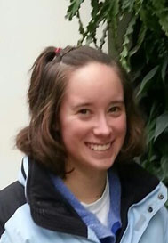
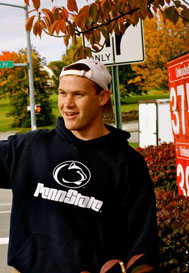

Meet the Committee
Public Relations & Outreach
The Directors of Public Relations and Outreach are looking forward to making this the most-attended Fresh START yet! This year, we are expanding our ideas and reaching out towards the University faculty for help in advertising and recruiting an excited group of volunteers. Fresh START Day of Service is a great opportunity for first-year and transfer students to serve and engage in their new community here at Penn State! It is sure to be a positive and enriching experience for everyone involved! We would like to encourage all first-year and transfer students to get rooted in service this August! If you are interested or know of anyone who might be, sign-ups for Fresh START 2013 will take place during Welcome Week in August! In addition, you will be able to sign up at volunteer.psu.edu. Stay tuned for more information!

Stephanie Sheppard
|
Hi! My name is Stephanie Sheppard, and I am one of the Public Relations and Outreach Directors for Fresh START Day of Service 2013. In the past, I have been both a participant and a team leader. This year, I am so excited to be serving as a Director! Fresh START is an amazing opportunity to experience the various service opportunities in Centre County and to make new friends. I am also a member in Engineering House and Recruitment Chair for Students Engaging Students. I am studying Electrical Engineering and I love everything about Penn State. If you have any questions, please feel free to contact me at sms5978@psu.edu!
|

Tim Kellagher
|
Hey guys! I'm Tim Kellagher and I am one of the two Co-Directors of Public Relations and Outreach for Fresh START 2013. This is my second year at Penn State, and I absolutely love everything Happy Valley! I'm double majoring in Marketing and Economics. I believe service is so important because State College has given me so much that I wanted to give something back to the community. I volunteered for Fresh START freshman year, was a team leader sophomore year, and now as a Director of PR&O, I will be working to make sure we have the best and most successful Fresh START ever! I am involved in the Business Student Council inside the SMEAL College of Business and the Public Relations Street Team for THON. If I'm not studying or working in the HUB, you can find me doing CrossFit at the gym, playing tennis or soccer, and hanging with my friends. If you have any questions at all, feel free to email me at timkellagher@gmail.com!
|
|